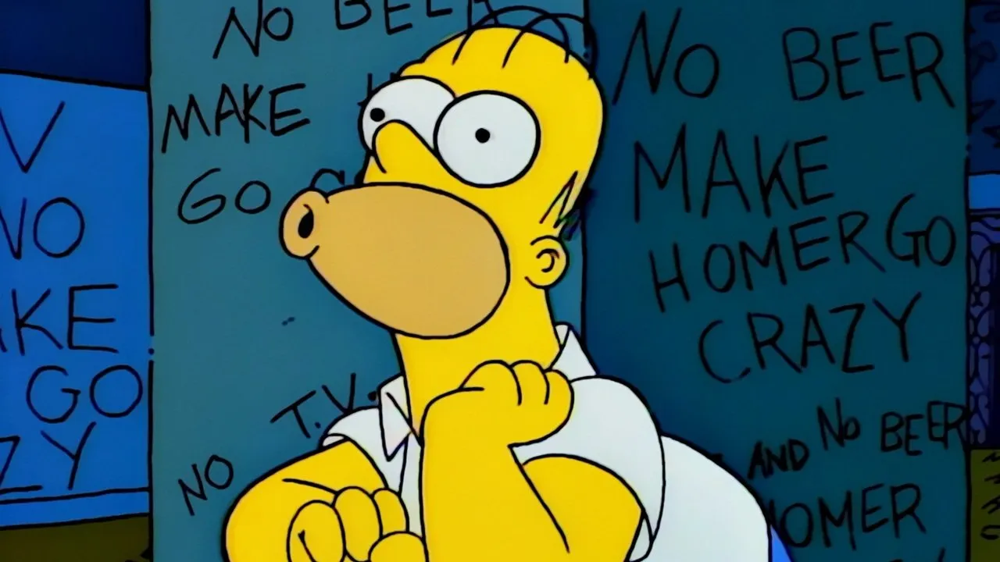

las mejores temporadas de los Simpson
“Los Simpson” es renovada una vez más: tendrá temporadas 35 y 36
Sin más preámbulos, la mejor temporada de "Los Simpson" en toda su historia es... La octava. Emitida originalmente entre el 27 de octubre de 1996 y el 18 de mayo de 1997, la octava temporada cuenta con 25 capítulos en total y para empezar a justificar mi postura comenzaré diciendo que recibió varios premios.
La casa-árbol del horror V, temporada 6 (1994)
Simpson para rato
Con esta confirmación, la muy querida familia Simpson se mantendrá al aire en 2024 y 2025, desestimando así los rumores de su posible cancelación. Michael Thorn, presidente de programación guionizada de Fox Entertainment, señaló que continuar con estos proyectos de televisión es “celebrar la excelencia en la animación de Fox” y su asociación con 20th Television, los creadores y el brillante elenco de voces.
Ver temporadas